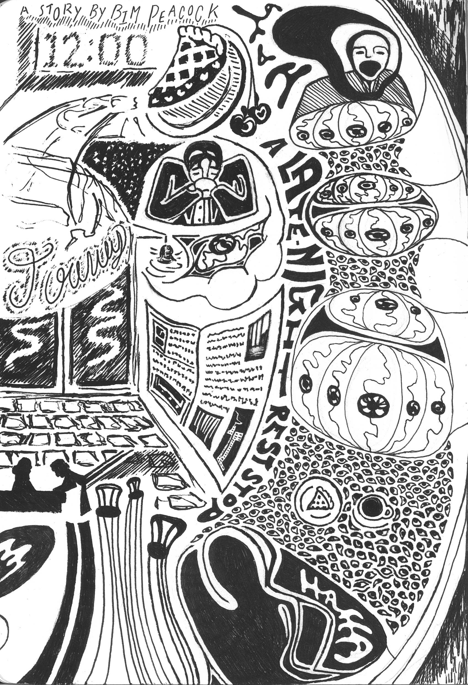

The
dashboard radio glowed 12:00 a.m., and just as the hour turned, a light
appeared down the highway. It was a happy sight to Pete’s tired mind; he had
grown rather bored of the blank black canvas of the Midwestern night. Nothing
had he seen but a vast empty expanse of fields for hours on end, with even the
presence of cornfields long since abandoned. Were it not for the broken yellow
lines on the road giving some illusion of change, he might well have gone mad.
The
boredom was not endured for nothing, at the very least. Pete had made
exceptional progress that night, putting plenty enough miles behind him on his
journey. Where to? He could not say. For what reason? He could not quite
remember. Progress, however, is progress. Pete deserved a late-night snack, and
the glow down the highway seemed to signal a diner.
The
sign outside said Joann’s in large cursive—nothing more. The restaurant
seemed quite accepting of what it was, being yet another 24-hour diner of the
thousands nearly identical across the nation. The glass door opened to the
jangle of a bell, as the door to every diner does. The floor tiles were shabby,
the walls vaguely yellowed, as you would hardly find them otherwise. The booths
were cracked, the tables that lovely cheap plastic or plaster. Even the
waitress seemed a cloned fixture of the Midwestern diner: a middle-aged woman
with greying hair tending the register, standing rigidly still with a mouth
agape, staring with faint terror into some distant place beyond the window, as
they do in such fine establishments.
Pete,
within his own mind at the least, was quite the charmer. He sauntered coolly
forward to lean against the counter. “You must be Joann. I must say, I didn’t
expect to see someone so young and attractive owning such a fine
business.”
A
faint pained sound escaped the woman’s gaping mouth, but her eyes remained
fixed in the distance.
Pete
smiled back. “Just a slice of cherry pie and a coffee for me, dear.”
He
slipped into a booth next to the window. To his surprise, the food and drink
already lay on the table, though he had seen no one bring them out.
Such
wonderful service! And at this time of night? he thought to himself,
happily sipping his coffee.
The
door jangled again as an old man walked into the diner. He didn’t order, didn’t
look to dear Joann. Instead, he simply passed into a booth by the door and sat
facing Pete, smiling across the diner at him. Pete, in turn, was flattered by
the warm gesture from the stranger and lifted his mug kindly. It did not
personally bother him that the old man’s lips curved too far across his face,
reaching too far past his cheeks in a thin line past his ears and nearly to the
back of his neck. After all, Pete was no attractive man himself; who would he
be to judge?
He
lifted his fork and gently touched it to his pie, but the crust twitched and
shifted. A single eye opened in its surface and stared back at him in alarm.
Pete,
a kind person and hating to be a bother, called to the waitress respectfully,
“Excuse me, Joann dear? I believe my pie might be a little undercooked.”
The
waitress quivered spasmodically, then fell still again.
“That’s
ok then dear, I can see you’re busy!” He jabbed the eye with his fork and it
closed again.
He
began to eat finally and picked up a newspaper left in the booth next to him,
thinking to peruse the local news. It’s always frustrating, however, when the
news is written in the local jargon. All the text was written backwards, which
thoroughly confused poor Pete, and of course, whatever news he could make out only
spoke of dark things he could not quite wrap his mind around. Another county,
yet the news always stays the same.

A LATE NIGHT REST STOP
ART BY KEIRA MARLOW
STORY BY BIM PEACOCK
A
movement from the window distracted him from his reading. He turned, and a
bulbous head rose from the pavement to meet his gaze. Poor Pete had never been
very good with math, but he counted one, two, three…six eyes staring back!
Strangely enough, they were the only features on the face. The creature watched
him briefly in uncanny stillness, like predator before prey, then slowly, it
raised its bony arm to the window. Its long slender claws drew screeching marks
upon the glass.
“Oh
dear!” exclaimed Pete. “Someone’s dog is loose!” He looked to the old man
across the diner, who had not stopped staring at him intently since entering.
“Is he yours, sir? You really should keep him on a leash. Too many bad things
can happen next to the highway to a poor pooch.”
The
man’s lips peeled back in an even broader grin. His lips parted, revealing a
set of empty fleshy gums. His upper jaw and head rocked backwards on his spine,
that mouth reaching almost all the way around his head opening wide, and he let
out a single laugh.
The
eye in Pete’s pie opened again at the sound. He sighed and dropped the
newspaper, then jabbed it once more, but another eye opened on the table and
stared at him. He jabbed that one too, but three more appeared, now in his
newspaper. Poking them only made them spread onto the booths, so he sighed and
looked back out the window, where more creatures had joined the first, all of
them black and bony and bulbous in the head. They, like everything else in the
diner, stared unblinking at him with their numerous eyes, scratching and
rubbing the glass in sinuous motions, trying to crawl through.
“At
least the pooch found some friends,” he said with a sigh.
Pete
looked out across the diner, taking in the bleak scene, and finally announced, “You
know, there’s something strange about all of this.”
The
scratching stopped. The old man’s hinged face drew back almost closed. The eyes
all watched expectantly. The waitress quivered again.
He
looked around, at all the eyes open and staring at him, from the table to the
creatures to the old man, and said, “Why is everyone staring at me but you,
Joann dear? You don’t think I’m unattractive, do you?”
The
woman shook violently. Her chest heaved as she gagged with awful violence. With
a sickening squelch, a tentacle-like stalk crawled from her mouth, and twisting
about lithely to point at Pete, a single eye opened and stared back.
Well,
Pete could not take anymore at that. He exploded with laughter, doubling over
in his seat and banging the table with a fist. The old man’s head rocked back
on its hinge and he howled with his own mirth with screeching cries. The two
strangers shared a beautiful moment of laughter in one another’s company as
bloody tears welled in their eyes, while those on the table spread across the
floor, over the walls, looking down from the ceiling, all staring, all judging.
The creatures outside beat upon the window with their fists—slammed it with
their heads and bodies, leaving cracks and blood upon the panes. Pete looked
down and saw the eyes begin spreading up his clothes like a bizarre rash, felt
them covering his skin, no longer able to stare at him, but staring into him,
through him, past his heart into his soul, watching the dark cracks throughout
it and the madness held back against thin floodgates. This only made him laugh
more, until he fell out of the booth onto the floor, convulsing and gurgling
laughter through the blood welling up in his throat.
The
old man stood over him now, laughing madly as eye stalks crawled from his own
cavernous throat. His limbs split, dividing and multiplying into endless
writhing appendages. His back twisted and popped as his stature grew.
Pete
laid back and sighed with delight, blinking away the blood in his eyes. He had
never experienced such a friendly exchange among strangers, let alone in such
an unlikely place, at such an unlikely time! He had not laughed so hard in
ages; surely, he must try and laugh more in the future, though that was
becoming difficult with the eyes now spreading down his throat.
He
looked up at the old man, and for the struggle of words, he hoped a mere glance
might share his gratitude better than his voice ever might. Sure enough, the
old man looked back from his gaping toothless mouth, and a glint touched his
eyes as well. Who’s to say whether it was understanding or the primal glint of
madness? Pete felt satisfied, nonetheless.
As
the two men shared the moment of comradery, as the eyes swallowed every last
surface, as the tentacle from within slowly tore apart the waitress, the
creatures shattered the windows, and the world went empty save for the echoing
of their shrieks.